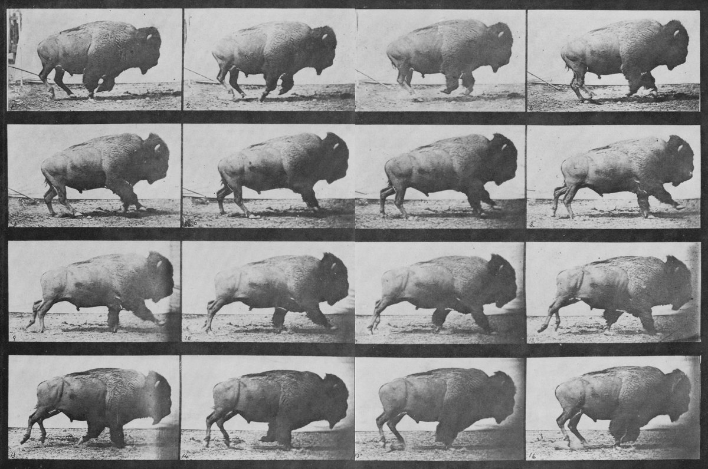

A loop can use the exact same number of frames and still look rough or smooth, depending on how those frames are spaced in time. Look at the photographic sequence below, one of the first ever made of motion broken into frames.


Muybridge captured this galloping buffalo in a rapid burst of frames spaced at even intervals in time — the same principle behind the animated loop you are refining. When the gap in time between frames is even, motion reads as smooth; when it is uneven, the motion stutters and jumps. Even spacing, combined with a matching frame delay in your GIF tool, is what makes a loop read as smooth.
Open your draft frames and your assembled GIF side by side. Work through these four checks in order.
1. Check the loop point
The loop point is the moment your last frame plays and jumps back to your first frame. Watch your GIF play through that seam several times in a row. If there is a visible pop, a limb that snaps to a different position, or a shape that jumps, your first and last frames do not agree closely enough. Open both in Pixlr E and nudge the last frame's drawing so it flows into the first without a jarring jump.
2. Check canvas size and alignment
Every frame must be exported at the exact same canvas size. If one frame is a different width or height than the rest, most GIF tools will stretch or shift it, and the whole loop will appear to shake in place. Check each exported PNG's dimensions match before you reassemble.
3. Adjust frame delay
The frame delay is how long each frame holds on screen before advancing to the next one, usually set in your GIF tool in milliseconds. If your motion reads too fast, raise the delay on every frame equally. If it drags, lower it. Change all frames by the same amount unless you intend one frame, like a held pose, to last longer on purpose.
4. Clean up onion-skin artifacts
Last week you used a workaround: duplicate the previous frame, lower its opacity as a reference, draw the new frame, then restore full opacity before exporting. If you forget to fully restore opacity on any layer, a faint ghost of the previous frame gets baked into the exported PNG. Zoom in on each frame in Pixlr E and erase any faint leftover lines before your final export.
frame01, frame02, frame03, before you upload them to your GIF tool.Once you have refined your loop, you will post it in this week's discussion and trade feedback with a classmate. Useful critique is specific and structured, not just "I like it" or "it's okay." Use this three-part protocol for every critique you give this week.
1. What works
Name one specific thing that is effective: a smooth section of the loop, a clear idea, a strong pose. Say exactly which part, not just that you liked it.
2. What's unclear
Name one moment that confused you or read as rough: a jump at the loop point, a shape that changes size, a section that feels too fast or slow.
3. One suggestion
Offer one concrete, doable fix tied to what you named in step 2. Not "make it better," but a specific change the artist could try.
This structure works in both directions. When you receive critique, you are not required to make every change suggested, but you are expected to genuinely consider it. Revising a project based on outside feedback is called iteration, and it is a normal part of how working artists and designers finish real projects, not a sign that the first draft was a failure.
No working artist ships a first draft. Refinement is where craft actually happens: catching the seam in your loop, tightening the timing, hearing what someone else notices that you could not see anymore. Iteration is not a correction of failure; it is how finished work gets made. This week you finish yours.